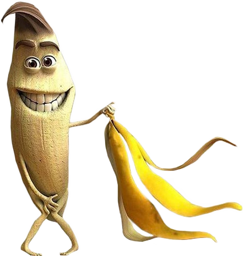

I am a god reincarnate. I master all the skills needed in this world and I shallt rule the world. Also I am a massive nerd that likes doing stuff on m computer
I wear a hood all the time because that make me cool? I dunno. Just living life.
I like this picture very much
| Methamphetamine | Schizoaffective disorder |
|---|---|
| Methamphetamine(contracted from N-methylamphetamine) is a strong central nervous system (CNS) stimulant that is mainly used as a recreational drug and less commonly as a treatment for attention deficit hyperactivity disorder and obesity. Methamphetamine was discovered in 1893 and exists as two enantiomers: levo-methamphetamine and dextro-methamphetamine. | Schizoaffective disorder (SZA, SZD or SAD) is a mental disorder characterized by abnormal thought processes and deregulated emotions. The diagnosis is made when the person has features of both schizophrenia and a mood disorder—either bipolar disorder or depression—but does not strictly meet diagnostic criteria for either alone |
| According to a National Geographic TV documentary on methamphetamine, an entire subculture known as party and play is based around sexual activity and methamphetamine use. | The average life expectancy of people with the disorder is shorter than those without it, due to increased physical health problems from an absence of health promoting behaviors including a sedentary lifestyle[citation needed], and a higher suicide rate. |
| Abuse of methamphetamine can result in a stimulant psychosis which may present with a variety of symptoms (e.g. paranoia, hallucinations, delirium, delusions). A Cochrane Collaboration review on treatment for amphetamine, dextroamphetamine, and methamphetamine abuse-induced psychosis states that about 5–15% of users fail to recover completely. | The primary treatment of schizoaffective disorder is medication, with improved outcomes using combined long-term psychological and social supports. Hospitalization may occur for severe episodes either voluntarily or (if mental health legislation allows it) involuntarily. Long-term hospitalization is uncommon since deinstitutionalization beginning in the 1950s, although it still occurs. |
just random information from wikipedia. please dont copyright strike. I'm just a lonely nerd making a website